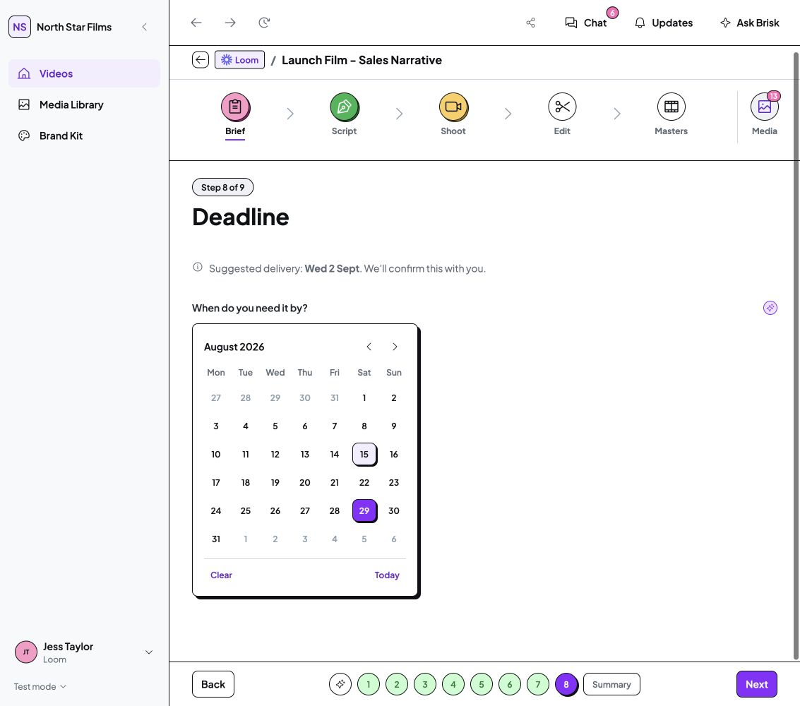
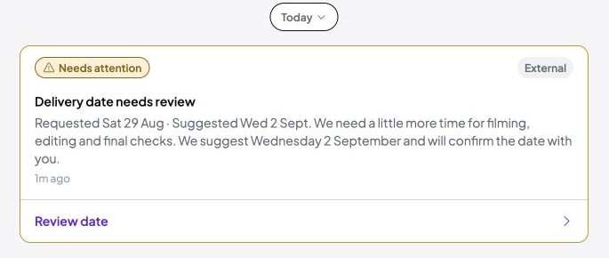
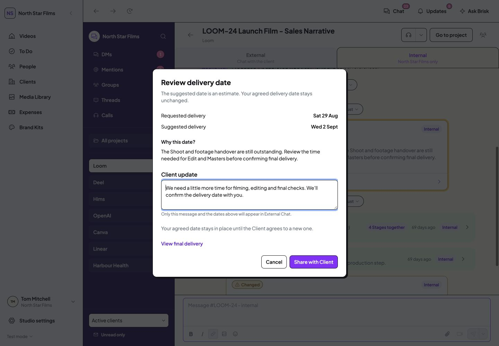
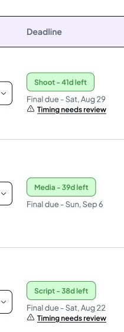

Timing warnings
Implementation saved · Final verification and evidence pack unfinished
Draft checkpoint: Tom is closing the computer. Final navigation checks and screenshot links still need finishing before this pack is presented for sign-off.
A short date suggestion before Brief submission, a proper timing conversation in Project Chat, and a persistent warning beside the deadline.
Open the isolated live demo · Verification register
28 October 2026. Screenshots are genuine captures of the running prototype on the separate local demo address. Sample project dates are retained. Your working browser data was not used for verification.
Brief: one line before submission
When a requested date is earlier than the sample assessment, the Brief shows a suggested delivery date and a short confirmation note. Draft edits do not post to Chat. After submission, the matching timing conversation lives in Project Chat.

1133px desktop, Studio Staff, changed date draft. Client view at 1440px before submission. Open either screenshot to enlarge.
Project Chat: dates, reason and Review date
Timing messages use the existing system-post pattern. Review date opens the date comparison and explanation. Producers can open the existing project deadline controls; Clients get a safe read-only review.

Client, External Chat, after producer review. The full capture includes a later Brief handoff as a separate event.

Studio Staff, unreleased production risk. Existing DS EditingDialog. 1133px capture.Production risks appear in Internal Chat first. Only Studio Staff can deliberately share the reviewed Client message to External Chat. Internal context is not copied into the Client message. Sharing does not change an agreed date or resolve the warning.
Deadline column: a small, persistent link
Timing needs review appears beneath the existing stage countdown and final date. It opens the corresponding project, channel and message. It is separate from the deadline-edit control. Reading Chat or marking messages read does not clear it.

Studio Staff, Videos. Full context opens on click. 1133px capture.
Verification and boundaries
Checked at 1440px and 1133px with expanded and collapsed navigation. Verified Brief submission, exact-message navigation, producer review, Client-safe visibility, an unassigned Freelancer restriction, Escape/focus return, read-state independence and no extra posts from draft edits or reloads.
Verification used the isolated local origin on port 8782. Demo Brief submission and Chat read/share actions affected that origin only. Existing project records, assets, dependencies, working-origin storage, permissions and earlier UI changes were preserved.
This batch uses explicit typed mock timing assessments for Loom and Hims. It does not implement a live AI forecast, the automatic stage timer, the separate Studio defaults design, deadline agreement/resolution or revision-round policy. Projects without an assessment do not receive invented delivery estimates. The dedicated Chat route is verified; the global drawer and an assigned Freelancer timing-warning case were not separately exercised.
Supporting evidence and source locations